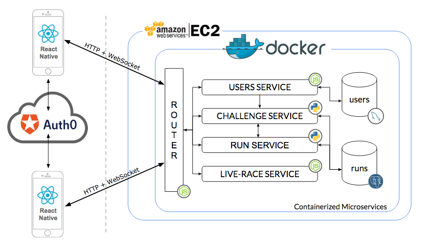
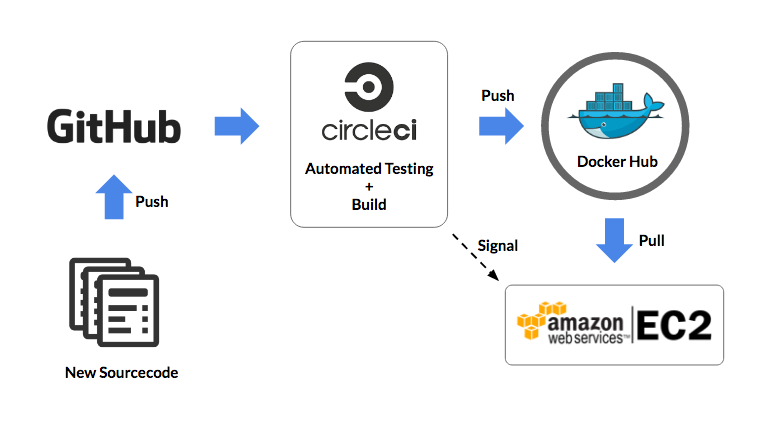

How do we get people off the couch and start exercising? Make it a competition so you can one-up your friends. This app challenges allows you to challenge your friends to a competitive race in real-time or asynchronously.
Project Code on: GitHub

System Architecture

Front End
The iOS Frontend is built with React-Native following the Google Materials Design guidelines. Authentication is handled with Auth0 with the Facebook (and potentially other) platform. The selection of React-Native as a frontend framework allow us to write mobile application in JavaScript and will facilitate easier porting to Android in the future.
Back End
The Backend are a collection of containerized microservices running under a docker-machine. The microservices architecture allow the team members to work on the codebase with minimum amount of overlap, reducing the time needed to resolve code conflicts.
The use of containerized microservices also provided flexibility in how the back-end is implemented. nodeJS + Express is used for the microservices responsible for routing, authentication, users management and websocket live race relays. Python and PostgresSQL are used for runs and challenges services to facilitate future manipulation work on geospatial data.
Continuous Integration (CI) & Deployment

The development process of this application utilizes Continuous Testing, Integration & Deployment workflow. Merges to the master branch are tested, and if the tests passes, docker images for each microservices are rebuilt and pushed to Docker Hub.
The EC2 instances then pull newly built docker images from the Docker Hub. Since we're using docker containers, little or no residue of the previous versions are left on the deployment environment.
Lessons
iOS (and now Android) is really aggressive in putting your application to sleep / hibernation mode. It makes executing application logic (such as monitoring GPS location and executing race logic) difficult.